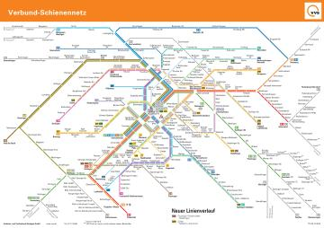
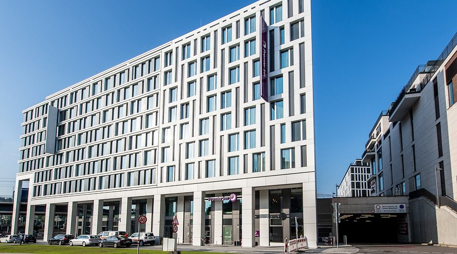
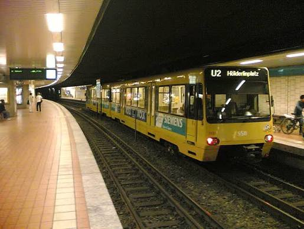
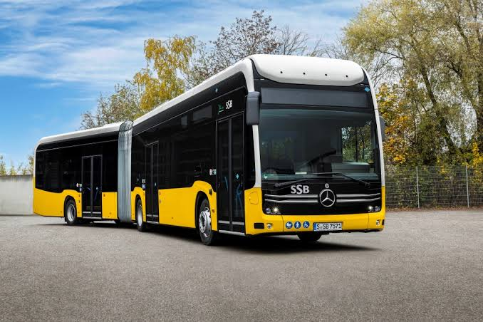
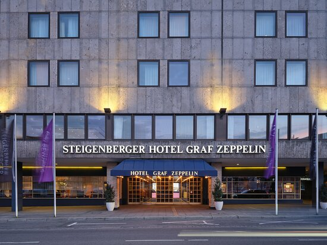
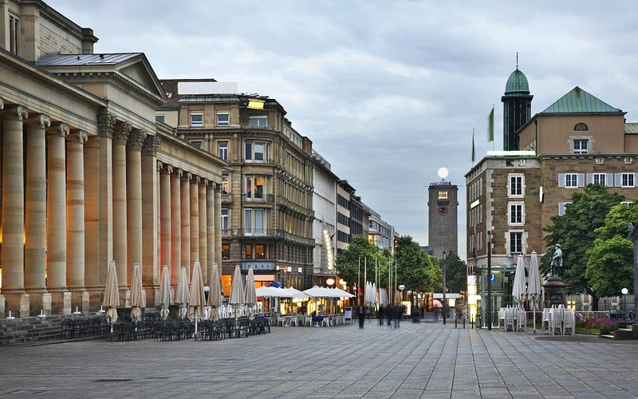

Transport

Stuttgart has an extensive public transportation network connecting the city center, surrounding neighborhoods, and the wider metropolitan region. The system combines suburban railways, light rail, buses, and regional trains, making it possible to travel throughout the area without a car. Most services are integrated into the Verkehrs- und Tarifverbund Stuttgart (VVS), which coordinates fares and ticketing across participating operators.
The S-Bahn forms the backbone of regional public transportation. Operated by Deutsche Bahn, it connects central Stuttgart with surrounding cities such as Esslingen, Ludwigsburg, Böblingen, and Backnang.
Most lines pass through the underground railway corridor between Stuttgart Hauptbahnhof and Schwabstraße, serving important stations such as Stadtmitte and Feuersee. The network is particularly useful for commuters and longer journeys across the metropolitan region.
Stuttgart's Stadtbahn is operated by Stuttgarter Straßenbahnen AG (SSB). Its yellow trains operate on a network combining underground tunnels, dedicated tracks, and street-level sections.
Unlike conventional trams, Stuttgart's Stadtbahn uses high-platform vehicles and serves both central neighborhoods and suburban districts. Lines beginning with the letter U connect destinations such as Bad Cannstatt, Vaihingen, Degerloch, and Möhringen.
The Stadtbahn is particularly convenient for shorter journeys within Stuttgart, especially in areas not directly served by the S-Bahn.

Buses complement the railway network by serving residential neighborhoods, hillside communities, and destinations without direct rail connections. SSB operates numerous urban bus routes, while regional operators connect surrounding towns and villages. Night buses provide additional transportation options when regular services are limited.
Regional trains, including Regional-Express (RE), Regionalbahn (RB), and Metropolexpress (MEX) services, connect Stuttgart with destinations throughout Baden-Württemberg. These trains are useful for traveling to cities such as Heilbronn, Tübingen, and Ulm.
Stuttgart uses a zone-based fare system managed by VVS. Passengers can purchase single tickets, day tickets, group tickets, and subscriptions. Most tickets permit transfers between different transportation modes within their validity conditions.
For frequent travelers, the Deutschlandticket offers unlimited travel on participating local and regional public transportation throughout Germany. As of 2026, it costs €63 per month and generally excludes long-distance ICE and IC trains.
Tickets can be purchased through the VVS app, DB Navigator, and ticket machines. Travelers should ensure they have a valid ticket before boarding, as inspections are conducted throughout the network.
The VVS journey planner provides schedules, connections, ticket information, and service updates. Passengers can also consult network maps to identify convenient transfers.
Stuttgart Hauptbahnhof serves as the main transportation hub, connecting suburban, regional, long-distance, and Stadtbahn services.
Overall, Stuttgart's integrated public transportation system offers convenient connections throughout the city and surrounding region, making it practical for residents, commuters, and visitors to travel without relying on private vehicles.
Hotel

Stuttgart offers a wide variety of hotels catering to business travelers, tourists, families, and budget-conscious visitors. As the capital of Baden-Württemberg and an important economic center, the city attracts guests throughout the year for business meetings, trade fairs, cultural events, and sightseeing.
The city center is one of the most convenient areas for accommodation. Hotels near Stuttgart Hauptbahnhof and Königstraße provide easy access to shopping streets, restaurants, museums, and public transportation. Well-known establishments include Steigenberger Graf Zeppelin, Le Méridien Stuttgart, and Motel One Stuttgart-Hauptbahnhof. These hotels offer different levels of comfort, ranging from modern budget-friendly rooms to luxury accommodation.
For business travelers, hotels near Stuttgart Airport and Messe Stuttgart are particularly attractive. These locations provide convenient access to international flights, exhibitions, and conferences. Several international hotel chains operate in the area, offering meeting facilities, business services, and transportation connections.
Visitors seeking more affordable accommodation can find budget hotels, hostels, guesthouses, and serviced apartments throughout Stuttgart. Districts such as Bad Cannstatt, Feuerbach, and Vaihingen provide alternatives to the city center, often with convenient S-Bahn or Stadtbahn connections. Bad Cannstatt is especially suitable for visitors attending sporting events or festivals at the nearby NeckarPark.
Hotel prices vary depending on location, facilities, season, and local events. Major trade fairs, concerts, and the Cannstatter Volksfest can increase demand, making advance reservations advisable.
Many hotels provide amenities such as breakfast, Wi-Fi, parking, and conference facilities. Visitors can compare accommodation options through booking platforms or the official Stuttgart tourism accommodation portal.
Overall, Stuttgart's diverse hotel market provides suitable accommodation for short city breaks, business trips, and extended stays, supported by an extensive public transportation network.
Food

Stuttgart offers a diverse culinary scene combining traditional Swabian cuisine, international restaurants, modern cafés, and local food markets. As the capital of Baden-Württemberg, the city reflects the region's culinary traditions while embracing influences from cultures around the world.
Traditional Swabian dishes are particularly popular in Stuttgart. Specialties include Maultaschen, pasta pockets filled with meat or vegetables, Spätzle, soft egg noodles often served with cheese, and Zwiebelrostbraten, roast beef topped with fried onions. These dishes can be enjoyed in traditional restaurants and taverns throughout the city.
Stuttgart also has a vibrant café culture. Numerous cafés offer freshly brewed coffee, cakes, pastries, and breakfast options. Popular establishments include Café Königx and several independent coffee shops. Traditional bakeries serve regional specialties such as pretzels, sweet pastries, and freshly baked bread.
The city's international population has contributed to a broad selection of restaurants serving Italian, Turkish, Greek, Asian, and Middle Eastern cuisine. Vegetarian and vegan dining options are also widely available.
One of Stuttgart's culinary landmarks is the Markthalle Stuttgart, a historic indoor market offering fresh produce, regional products, spices, and international delicacies. Its Art Nouveau building dates back to 1914.
Stuttgart is also surrounded by vineyards, and traditional Swabian wine taverns form an important part of its food culture. Seasonal festivals, including the Cannstatter Volksfest and Stuttgart Wine Village, showcase regional specialties.
Overall, Stuttgart's combination of traditional cooking, international cuisine, lively cafés, and historic food markets provides a varied dining experience for residents and visitors alike.